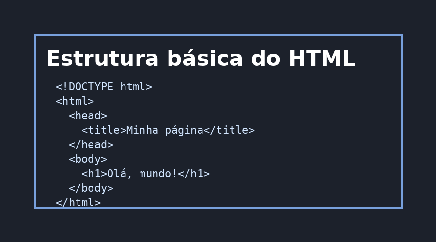
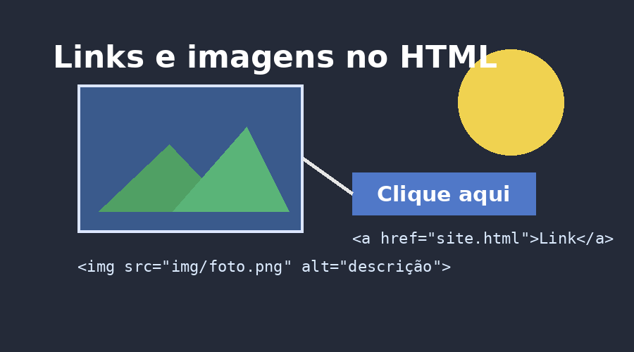

Este guia foi criado para revisar alguns conceitos importantes de HTML que aparecem nas primeiras aulas.
A ideia é mostrar, de forma simples, como criar uma página usando títulos, textos, links, imagens e organização por seções.
O que é HTML | Estrutura básica | Tags de texto | Links | Imagens | Conclusão
HTML significa HyperText Markup Language, ou seja, Linguagem de Marcação de Hipertexto.
Ele é usado para criar a estrutura de páginas na internet. Com HTML, conseguimos colocar textos, imagens, links, títulos e várias outras informações dentro de uma página.
HTML não é uma linguagem de programação, é uma linguagem de marcação.
Para aprender mais, você pode acessar o site da documentação da MDN sobre HTML.
Toda página HTML normalmente começa com uma estrutura básica. Essa estrutura ajuda o navegador a entender o conteúdo do arquivo.

Algumas partes importantes são:
O DOCTOTYPE informa ao navegador que o documento usa HTML5.
A tag Head guarda informações que não aparecem diretamente no corpo da página, como o título da aba.
A tag Body guarda o conteúdo visível da página.
As tags de texto servem para organizar e destacar informações.
O h1 é usado para o título principal. Já o h2 e o h3 são usados para subtítulos.
A tag p cria parágrafos. Também podemos usar strong para negrito, em para itálico e mark para destacar um texto.
Exemplo de frase:
Aprender HTML é um passo muito importante para quem quer estudar desenvolvimento web.
Os links são criados com a tag a. Eles servem para levar o usuário para outra página, outro site ou até uma seção da própria página.
Exemplo de link externo:
Abrir o YouTube em uma nova aba
Exemplo de link interno:
Voltar para o começo da página
As imagens são adicionadas com a tag img. Essa tag usa o atributo img para indicar o caminho da imagem e o atributo alt para descrever a imagem.

O atributo alt é importante porque ajuda na acessibilidade e também aparece caso a imagem não carregue.
Também podemos controlar o tamanho da imagem usando atributos como width ou height.
Nesta página, revisamos várias partes básicas do HTML: estrutura, títulos, parágrafos, formatação de texto, links e imagens.
O mais importante agora é praticar criando suas próprias páginas. Quanto mais você escrever HTML, mais natural ele vai ficar.
Praticar é melhor do que apenas assistir aula.